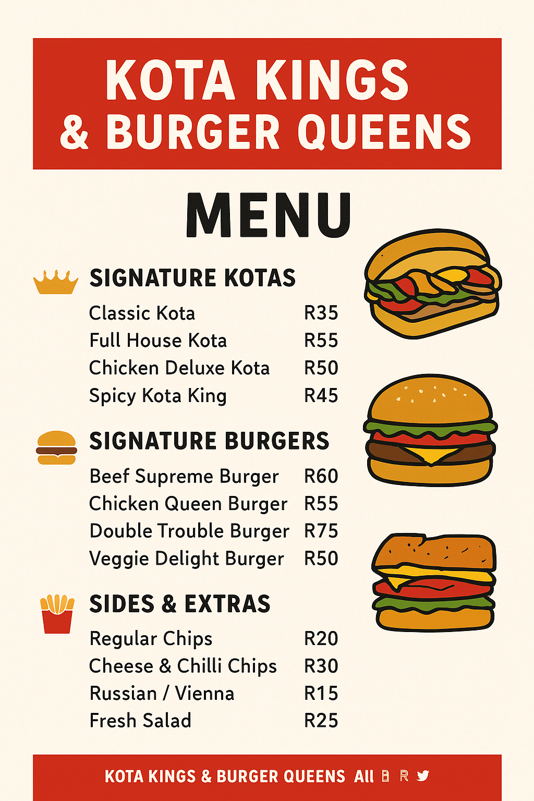

Menu
Signature Kotas
- Classic Kota – A fresh quarter loaf filled with chips, Russian sausage, cheese, and atchar.
- Full House Kota – Chips, Russian, polony, cheese, egg, beef patty, and our secret sauce.
- Chicken Deluxe Kota – Crispy chicken strips with chips, cheese, lettuce, tomato, and mayo.
- Spicy Kota King – Chips, Vienna, mince, jalapeños, cheese, and chili sauce for that fiery kick.
Signature Burgers
- Beef Supreme Burger – Juicy beef patty, lettuce, tomato, cheese, caramelized onions, and BBQ sauce.
- Chicken Queen Burger – Grilled or crispy chicken fillet, mayo, lettuce, tomato, and cheese.
- Double Trouble Burger – Double beef patties, double cheese, lettuce, tomato, and our signature sauce.
- Veggie Delight Burger – Grilled veggie patty with cheese, fresh salad, and tangy mayo.
Sides & Extras
- Regular Chips 🍟
- Loaded Cheese & Chilli Chips 🌶️🧀
- Russian, Vienna, or Polony add-ons
- Fresh salads 🥗
Drinks
- Soft Drinks (Coke, Fanta, Sprite)
- Fresh Juices
- Milkshakes (Chocolate, Strawberry, Vanilla)
